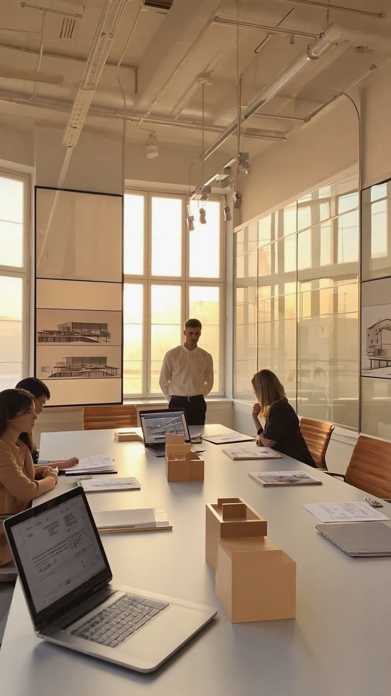
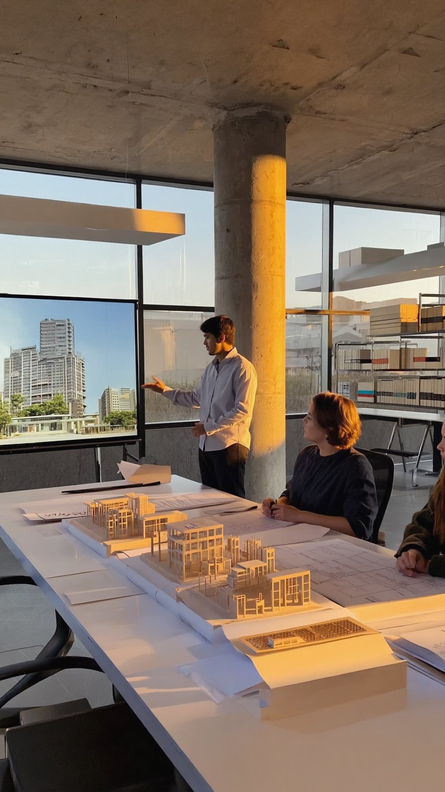
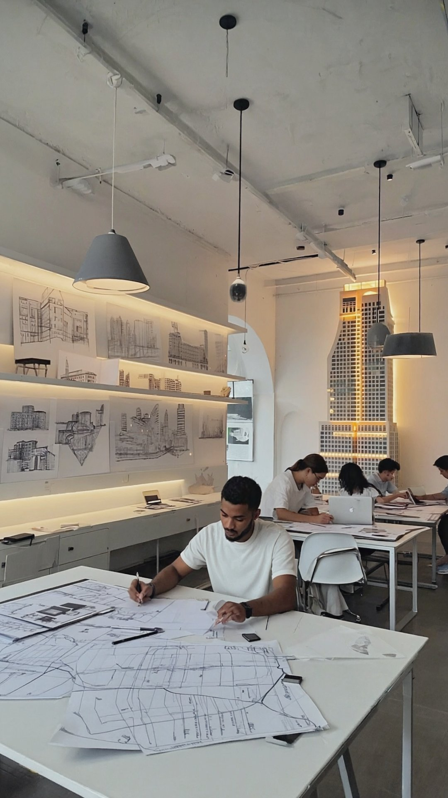

Having access to high-quality IT support is crucial for architecture firms. Working with a team like DTCloudOn allows you to get customized support that is essential for your business, especially when it comes to safeguarding private data. We have extensive knowledge not only about what it takes to protect your company and prevent potential threats but also about what software solutions would be ideal for your staff. We are aware of the latest software technology in the industry, helping you continuously thrive ahead of your competitors.
DTCloudOn has a vast array of expertise working with clients in the architecture industry, so we know what it takes to meet high standards. We can design and implement personalized IT infrastructure at your architecture firm, giving you access to the latest software and hardware solutions along with other technology that will help you keep your clients and employees happy.
We can also show you how to effectively operate and manage your technology during daily operations, easing the transition into using the new setup. The sooner everyone understands the ins and outs, the better it will be for everyone using it.
Don't worry: your employees won't have to handle everything on their own. The DTCloudOn team is available for network monitoring and maintenance, helping you keep an eye out for potential cyber threats and software issues while also providing effective solutions when needed.
Our proactive monitoring sets your employees up to be more productive, allowing them to focus on the company's needs, clients, and daily functions rather than constantly having to monitor the network and diagnose any potential issues that arise. Increased productivity could easily lead to more clients and higher profits. We also ensure that all software used at your architecture firm is up-to-date, delivering increased protection against potential issues as they develop.
Explore network management →
DTCloudOn offers an IT support/help desk option available every day of the year, around the clock. We monitor your network when you can't, even outside of business hours. If you have a problem, contact us right away, and we'll get started on finding a timely solution so you can get back to work fast.
Additional reading: IT support for professional services →
Architecture firms are responsible for protecting private client files and plans. It can seem like an overwhelming task, especially in the age of a near-constant barrage of cyber threats.
DTCloudOn can offer cybersecurity solutions that are ideal for your architecture firm, helping to protect sensitive information in the process. It's undoubtedly something your clients and employees will appreciate, especially for the most hush-hush projects.
Strengthen your cybersecurity →
Each project at your architecture firm likely involves a significant amount of confidential information that absolutely cannot end up in unauthorized hands. DTCloudOn provides cloud-based solutions to companies like yours, allowing you to store data off-site where it's highly protected yet easily accessible by those granted access to it.
This can especially be vital in the event of an outage or data breach where efficient recovery services are paramount. Let us know your needs, and we can assist you with choosing the best cloud-based options for your architecture firm.
Explore cloud services →Quality IT support can mean happier clients and employees. Contact DTCloudOn today, and we can help your architecture firm install up-to-date technology. We can also implement high-quality security measures and effective solutions that can benefit your team and clients in the short and long term.
Contact Us →IT support for architecture firms focuses on managing high-performance systems, specialized design software, and secure networks that support drafting, modeling, and project collaboration. These services ensure architects can work efficiently while protecting sensitive client plans and data.
IT support ensures that CAD, BIM, and rendering applications run on properly configured hardware with optimized storage and network performance. This reduces lag, prevents crashes, and keeps large design files accessible across project teams.
Architecture firms handle confidential blueprints, client data, and proprietary designs. Cybersecurity services protect this information through access controls, monitoring, and threat prevention, reducing the risk of data leaks or project compromise.
Continuous network monitoring identifies performance issues, software errors, and security threats before they disrupt work. This proactive approach helps architects stay focused on projects rather than troubleshooting IT problems.
IT help desk support offers around-the-clock assistance for technical issues, from software errors to connectivity problems. This ensures fast resolution so teams can return to project work with minimal downtime.
Cloud solutions enable secure storage and sharing of large project files, allowing teams to collaborate across offices or remote locations. They also support rapid recovery in case of outages or data loss.
Yes. IT support includes designing and deploying customized infrastructure, integrating new hardware and software, and guiding staff through the transition to ensure systems are used effectively from day one.
By keeping systems modern, secure, and optimized, IT support helps firms adopt the latest tools, improve productivity, and deliver high-quality work to clients without technology becoming a limiting factor.
Talk to a DTCloudOn specialist who understands design workflows, CAD/BIM environments, and the security needs of architecture firms.
Request a Free Consultation →